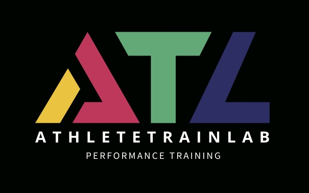

<!DOCTYPE html>
<html lang="es">
<head>
<meta charset="UTF-8">
<meta name="viewport" content="width=device-width, initial-scale=1.0">
<title>AthleteTrainLab — ¿Qué te está limitando?</title>
<style>
  :root {
    --bg: #0d1117; --card: #161b22; --border: #30363d;
    --acc: #2dd4bf; --acc2: #0ea5e9; --txt: #e6edf3; --dim: #8b949e;
  }
  * { margin: 0; padding: 0; box-sizing: border-box; }
  body {
    background: radial-gradient(1200px 600px at 70% -10%, #12303a 0%, var(--bg) 55%);
    color: var(--txt); font-family: -apple-system, "Segoe UI", Roboto, sans-serif;
    min-height: 100vh; display: flex; align-items: center; justify-content: center; padding: 20px;
  }
  .app { width: 100%; max-width: 560px; }
  .progress { height: 4px; background: var(--border); border-radius: 2px; margin-bottom: 28px; overflow: hidden; }
  .progress-fill { height: 100%; width: 0%; border-radius: 2px;
    background: linear-gradient(90deg, var(--acc2), var(--acc)); transition: width .5s ease; }
  .card { background: var(--card); border: 1px solid var(--border); border-radius: 16px;
    padding: 36px 32px; animation: in .35s ease; }
  @keyframes in { from { opacity: 0; transform: translateY(14px); } to { opacity: 1; transform: none; } }
  .fase { color: var(--acc); font-size: 12px; letter-spacing: 2px; text-transform: uppercase; margin-bottom: 14px; }
  h1 { font-size: 26px; line-height: 1.3; margin-bottom: 12px; }
  h2 { font-size: 21px; line-height: 1.35; margin-bottom: 22px; font-weight: 600; }
  p.sub { color: var(--dim); font-size: 15px; line-height: 1.55; margin-bottom: 24px; }
  .opts { display: flex; flex-direction: column; gap: 10px; }
  .opt { text-align: left; background: #1c2129; border: 1px solid var(--border); color: var(--txt);
    padding: 15px 18px; border-radius: 10px; font-size: 15.5px; cursor: pointer; transition: all .15s; }
  .opt:hover { border-color: var(--acc); background: #20303280; transform: translateX(3px); }
  .btn { display: inline-block; background: linear-gradient(90deg, var(--acc2), var(--acc)); color: #04252b;
    font-weight: 700; border: none; padding: 15px 34px; border-radius: 10px; font-size: 16px; cursor: pointer; }
  .btn:disabled { opacity: .4; cursor: default; }
  input[type=email], input.txt { width: 100%; background: #1c2129; border: 1px solid var(--border); color: var(--txt);
    padding: 14px 16px; border-radius: 10px; font-size: 16px; margin-bottom: 16px; }
  label.check { display: flex; gap: 10px; align-items: flex-start; text-align: left; cursor: pointer;
    color: var(--txt); font-size: 14px; line-height: 1.4; margin: 4px 0 18px; }
  label.check input { width: 18px; height: 18px; margin-top: 1px; flex: 0 0 auto; accent-color: var(--acc); }
  .tema { display: inline-block; font-size: 11px; letter-spacing: .05em; text-transform: uppercase;
    color: var(--acc); border: 1px solid var(--border); border-radius: 999px; padding: 3px 11px; margin-bottom: 12px; }
  .ilus { margin: 2px 0 16px; text-align: center; }
  .ilus svg { max-width: 240px; height: auto; }
  .antro-row { display: flex; gap: 12px; margin-bottom: 8px; }
  .antro-row input { flex: 1; min-width: 0; background: #1c2129; border: 1px solid var(--border);
    color: var(--txt); padding: 14px 16px; border-radius: 10px; font-size: 16px; }
  @media (max-width: 480px) { .antro-row { flex-direction: column; } }
  .spinner { width: 46px; height: 46px; border: 4px solid var(--border); border-top-color: var(--acc);
    border-radius: 50%; margin: 26px auto; animation: spin 0.9s linear infinite; }
  @keyframes spin { to { transform: rotate(360deg); } }
  .center { text-align: center; }
  .badge { display: inline-block; padding: 4px 12px; border-radius: 20px; font-size: 12px; font-weight: 700; }
  .b-alta { background: #14532d; color: #86efac; } .b-media { background: #713f12; color: #fde047; }
  .b-baja { background: #334155; color: #cbd5e1; }
  .bar-row { margin-bottom: 14px; }
  .bar-label { display: flex; justify-content: space-between; font-size: 13.5px; margin-bottom: 5px; color: var(--dim); }
  .bar { height: 8px; background: var(--border); border-radius: 4px; overflow: hidden; }
  .bar-fill { height: 100%; border-radius: 4px; background: linear-gradient(90deg, var(--acc2), var(--acc)); transition: width 1s ease; }
  .hyp { border: 1px solid var(--acc); border-radius: 12px; padding: 20px; margin: 18px 0; background: #10221f; }
  .hyp.sec { border-color: var(--border); background: #1a1f27; }
  .hyp h3 { font-size: 17px; margin-bottom: 8px; }
  .hyp p { font-size: 14px; color: var(--dim); line-height: 1.5; }
  .evid { font-size: 13.5px; color: var(--dim); margin-top: 20px; border-top: 1px solid var(--border); padding-top: 14px; }
  .evid li { margin: 6px 0 6px 18px; }
  .disclaimer { font-size: 12px; color: #6e7681; margin-top: 22px; line-height: 1.5; }
  .link { background: none; border: none; color: var(--acc); cursor: pointer; font-size: 14px; margin-top: 14px; text-decoration: underline; }
  .grupo-tit { color: var(--acc); font-size: 12px; font-weight: 700; letter-spacing: 1px;
    text-transform: uppercase; margin: 18px 0 8px; }
  .grupo-tit:first-of-type { margin-top: 4px; }
  .logo { text-align: center; margin-bottom: 20px; }
  .logo-atl { font-weight: 800; font-style: italic; font-size: 44px; letter-spacing: 2px; line-height: 1; }
  .logo-atl .a { color: #c33a5b; } .logo-atl .t { color: #4fa96e; } .logo-atl .l { color: #6a67d6; }
  .logo-name { color: var(--txt); font-weight: 700; letter-spacing: 5px; font-size: 15px; margin-top: 6px; }
  .logo-sub { color: var(--dim); letter-spacing: 4px; font-size: 10px; margin-top: 3px; }
  .wa { display: inline-flex; align-items: center; gap: 7px; color: #25d366; text-decoration: none;
    font-size: 14px; margin-top: 16px; border: 1px solid #25d36655; border-radius: 8px; padding: 9px 16px; }
  .wa:hover { background: #25d3661a; }
  .backbtn { background: #1c2129; border: 1px solid var(--border); border-radius: 10px;
    color: var(--txt); cursor: pointer; font-size: 15px; padding: 12px 22px;
    margin-bottom: 18px; display: inline-block; }
  .backbtn:hover { border-color: var(--acc); color: var(--acc); }
  #dbg { position: fixed; top: 10px; right: 10px; width: 280px; max-height: 92vh; overflow-y: auto;
    background: #0a0e13ee; border: 1px solid #2dd4bf55; border-radius: 10px; padding: 12px;
    font-family: ui-monospace, Menlo, monospace; font-size: 11px; line-height: 1.5; color: #9fe8dd; z-index: 99; }
  #dbg hr { border: none; border-top: 1px solid #30363d; margin: 8px 0; }
  #dbg b { color: #2dd4bf; }
  @media (max-width: 900px) { #dbg { position: static; width: auto; max-height: none; margin-top: 16px; } }
</style>
</head>
<body>
<div class="app">
  <div class="progress"><div class="progress-fill" id="pf"></div></div>
  <div class="card" id="card"></div>
</div>
<script>
const KB = __DATA__;
const KBVER = "__KBVER__";
const NIVELES = ["baja","media","alta","muy-alta"];
const MAX_PREGUNTAS = 25, META_ESTIMADA = 14;

// ---------- estado de la evaluación ----------
let ctx = {}, metadatos = new Set(), estado = {}, respondidas = new Set(),
    evidencia = [], limitacion = null, nRespuestas = 0, modoAfinar = false,
    modo = "limitacion", objetivo = null, recorrido = [], revision = null;

const DEBUG = typeof location !== "undefined" &&
  (new URLSearchParams(location.search).has("debug") || location.hash === "#debug");
let debugLog = [];
if (DEBUG) document.title = "[DEBUG] " + document.title;

// ---------- historial para el botón atrás ----------
let historial = [], permitirAtras = false;

function snap(driver) {
  historial.push({ driver, st: {
    ctx: { ...ctx }, metadatos: [...metadatos], estado: { ...estado },
    respondidas: [...respondidas], evidencia: evidencia.map(e => ({ ...e })),
    recorrido: [...recorrido], nRespuestas, limitacion, modo,
    objetivo: objetivo ? objetivo.codigo : null,
    colaBateria: colaBateria.map(q => q.codigo), colaPerfil: colaPerfil.map(q => q.codigo),
    modoAfinar, debugLog: [...debugLog]
  }});
}

function atras() {
  if (historial.length < 2) return;
  historial.pop();                // pantalla actual
  const h = historial.pop();      // anterior (se re-agrega al re-render)
  const s = h.st;
  ctx = { ...s.ctx }; metadatos = new Set(s.metadatos); estado = { ...s.estado };
  respondidas = new Set(s.respondidas); evidencia = [...s.evidencia];
  recorrido = [...s.recorrido]; nRespuestas = s.nRespuestas; limitacion = s.limitacion;
  modo = s.modo; objetivo = s.objetivo ? KB.objetivos.find(o => o.codigo === s.objetivo) : null;
  colaBateria = s.colaBateria.map(c => KB.preguntas.find(q => q.codigo === c));
  colaPerfil = (s.colaPerfil || []).map(c => KB.preguntas.find(q => q.codigo === c));
  modoAfinar = s.modoAfinar; debugLog = [...s.debugLog];
  prog();
  h.driver();
}

const $ = h => {
  const boton = (permitirAtras && historial.length > 1)
    ? '<button class="backbtn" onclick="atras()">← Atrás</button>' : "";
  document.getElementById("card").innerHTML = boton + h;
  debugRender();
};

function debugRender() {
  if (!DEBUG) return;
  let el = document.getElementById("dbg");
  if (!el) { el = document.createElement("div"); el.id = "dbg"; document.body.appendChild(el); }
  const est = Object.entries(estado).sort((a, b) => b[1] - a[1])
    .map(([k, v]) => `${k} ${(KB.nombres[k] || k)}: <b>${v > 0 ? "+" : ""}${v}</b> (${confianza(v)})`).join("<br>");
  const cand = limitacion ? candidatas().map(q => `${q.codigo}(±${impacto(q)})`).join(" ") : "-";
  const hyp = evaluarHipotesis().map(([s, h], i) =>
    `${i === 0 ? "★" : "·"} ${h.codigo} ${h.nombre.slice(0, 34)} <b>${s}</b>`).join("<br>") || "ninguna activada";
  el.innerHTML = `<b>🔧 MODO DEBUG ACTIVO</b> (v ${KBVER})<br>modo: ${modo}${objetivo ? " " + objetivo.codigo : ""} · lim: ${limitacion || "-"} · resp: ${respondidas.size}
    <hr><b>metadatos activos (${metadatos.size})</b><br>${[...metadatos].sort().join(", ") || "-"}
    <hr><b>estado de conocimiento</b><br>${est || "sin puntos"}
    <hr><b>últimos efectos</b><br>${debugLog.slice(-5).join("<br>") || "-"}
    <hr><b>candidatas (orden D9)</b><br>${cand || "agotadas"}
    <hr><b>hipótesis (live)</b><br>${hyp}
    <hr><b>parada</b> · alta alcanzada: ${hayAlta() ? "SÍ" : "no"} · ${respondidas.size}/${MAX_PREGUNTAS}`;
}
const prog = () => { document.getElementById("pf").style.width =
  Math.min(96, Math.round(100 * nRespuestas / META_ESTIMADA)) + "%"; };

function confianza(p) { return p <= 3 ? "baja" : p <= 7 ? "media" : p <= 12 ? "alta" : "muy-alta"; }

function cumple(cond) {
  for (const [campo, expr] of Object.entries(cond)) {
    const v = ctx[campo];
    if (v == null) return false;
    if (typeof expr === "string" && (expr[0] === ">" || expr[0] === "<")) {
      const n = parseFloat(expr.slice(1));
      if (expr[0] === ">" ? !(v > n) : !(v < n)) return false;
    } else if (v !== expr) return false;
  }
  return true;
}

function efectos(r) {
  const ef = {...(r.puntos || {})};
  for (const pc of (r.puntos_condicionales || []))
    if (cumple(pc.si)) for (const [k, v] of Object.entries(pc.puntos)) ef[k] = (ef[k] || 0) + v;
  return ef;
}

function impacto(q) {
  let m = 0;
  for (const r of q.respuestas) {
    for (const v of Object.values(r.puntos || {})) m = Math.max(m, Math.abs(v));
    for (const pc of (r.puntos_condicionales || []))
      for (const v of Object.values(pc.puntos)) m = Math.max(m, Math.abs(v));
  }
  return m;
}

function candidatas() {
  return KB.preguntas.filter(q => q.tipo === "afinacion" && !respondidas.has(q.codigo) &&
    (q.condiciones_aparicion.metadatos_requeridos || []).every(m => metadatos.has(m)) &&
    !(q.condiciones_aparicion.metadatos_excluidos || []).some(m => metadatos.has(m)))
    .sort((a, b) => impacto(b) - impacto(a) || a.codigo.localeCompare(b.codigo));
}

function hayAlta() { return Object.values(estado).some(p => confianza(p) === "alta" || confianza(p) === "muy-alta"); }

function evaluarHipotesis() {
  const act = [];
  for (const h of KB.hipotesis) {
    let ok = true;
    for (const c of (h.condiciones || [])) {
      const nivel = NIVELES.indexOf(confianza(estado[c.elemento] || 0));
      if (c.confianza_minima && nivel < NIVELES.indexOf(c.confianza_minima)) ok = false;
      if (c.confianza_maxima && nivel > NIVELES.indexOf(c.confianza_maxima)) ok = false;
    }
    for (const c of (h.contraindicadores || []))
      if ((estado[c.elemento] || 0) <= c.puntos_maximos) ok = false;
    if (ok) act.push([h.elementos.reduce((s, e) => s + Math.max(estado[e] || 0, 0), 0), h]);
  }
  act.sort((a, b) => b[0] - a[0]);
  return act;
}

// D26: la limitación declarada manda. Sube al frente la hipótesis núcleo de la
// limitación (la de mayor score que haya disparado); el resto queda como
// "además notamos". En modo objetivo no aplica.
function rankearNucleo(act) {
  if (modo === "objetivo" || !act.length || !limitacion) return act;
  const lim = KB.limitaciones.find(l => l.codigo === limitacion);
  const nucleo = (lim && lim.hipotesis_nucleo) || [];
  if (!nucleo.length) return act;
  const i = act.findIndex(([, h]) => nucleo.includes(h.codigo));
  if (i > 0) act.unshift(act.splice(i, 1)[0]);
  return act;
}

// ---------- marca y contacto ----------
const LOGO = `<div class="logo"></div>`;
const WA_NUM = "50688445505";
function waLink(motivo) {
  const txt = encodeURIComponent(motivo || "Hola, tengo una consulta sobre mi evaluación de AthleteTrainLab.");
  return `<a class="wa" href="https://wa.me/${WA_NUM}?text=${txt}" target="_blank" rel="noopener">
    <svg width="16" height="16" viewBox="0 0 24 24" fill="#25d366"><path d="M12 2a10 10 0 0 0-8.5 15.2L2 22l4.9-1.5A10 10 0 1 0 12 2zm5.8 14.1c-.2.7-1.4 1.3-2 1.4-.5.1-1.2.1-1.9-.1-.4-.1-1-.3-1.7-.6-3-1.3-4.9-4.3-5.1-4.5-.1-.2-1.2-1.6-1.2-3 0-1.4.7-2.1 1-2.4.2-.3.5-.3.7-.3h.5c.2 0 .4 0 .6.5l.8 1.9c.1.2.1.3 0 .5l-.4.6-.3.3c-.1.1-.3.3-.1.6.2.3.8 1.3 1.7 2.1 1.2 1 2.1 1.4 2.4 1.5.2.1.4.1.6-.1l.8-1c.2-.2.4-.2.6-.1l1.8.9c.3.1.5.2.5.3.1.2.1.7-.1 1.3z"/></svg>
    Dudas o consultas por WhatsApp</a>`;
}

// ---------- pantallas ----------
function bienvenida() {
  permitirAtras = false; snap(bienvenida);
  $(`<div class="center">
    ${LOGO}
    <h1>Tu mayor ganancia no está<br>en entrenar más.</h1>
    <p class="sub">Está en saber exactamente qué te frena. En 3 minutos, un motor que razona
    como un entrenador analiza tus respuestas y te dice dónde está tu mayor margen de mejora
    — y por dónde empezar.</p>
    <button class="btn" onclick="pasoContexto(0)">Descubrir qué me frena</button>
    <p class="disclaimer">3 minutos · Gratis · Sin registro para empezar</p>
    <button class="link" onclick="pasoCodigoRevision()">¿Tienes un código de evaluación?</button>
    <div>${waLink()}</div>
  </div>`);
}

// ---------- código de evaluación (autocontenido, sin servidor) ----------
function generarCodigo() {
  const payload = [modo[0], objetivo ? objetivo.codigo : "", limitacion,
    [ctx.edad, ctx.experiencia_anios, ctx.frecuencia_sem, ctx.duracion_fondo_h,
     ctx.peso_kg || "", ctx.estatura_cm || "", ctx.sexo || "", ctx.usa_hr ? "1" : ""].join(","),
    recorrido.join("."), KBVER].join("|");
  return "ATL1-" + btoa(payload).replace(/\+/g, "-").replace(/\//g, "_").replace(/=+$/, "");
}

function pasoCodigoRevision() {
  permitirAtras = false;
  $(`<div class="fase">Revisión de evaluación</div>
    <h2>Pega el código de evaluación</h2>
    <p class="sub">Reconstruye el recorrido completo: qué se respondió, qué puntos generó
    cada respuesta y cómo se llegó a la hipótesis.</p>
    <input type="email" id="cod" placeholder="ATL1-..." style="font-family:monospace">
    <div class="center"><button class="btn" onclick="revisarCodigo()">Revisar</button></div>
    <button class="link" onclick="bienvenida()">Volver</button>`);
}

function revisarCodigo(codeArg) {
  const el = document.getElementById("cod");
  const code = (codeArg != null ? codeArg : (el ? el.value : "")).trim();
  try {
    const p = atob(code.replace(/^ATL1-/, "").replace(/-/g, "+").replace(/_/g, "/")).split("|");
    modo = p[0] === "o" ? "objetivo" : "limitacion";
    objetivo = p[1] ? KB.objetivos.find(o => o.codigo === p[1]) : null;
    limitacion = p[2];
    const cv = p[3].split(",");
    ctx = { edad: +cv[0], experiencia_anios: +cv[1], frecuencia_sem: +cv[2], duracion_fondo_h: +cv[3] };
    if (cv[4]) ctx.peso_kg = +cv[4];
    if (cv[5]) ctx.estatura_cm = +cv[5];
    if (cv[6]) ctx.sexo = cv[6];
    if (cv[7]) ctx.usa_hr = true;
    calcularIMC();
    metadatos = new Set(); estado = {}; respondidas = new Set(); evidencia = [];
    if (ctx.imc >= 27) metadatos.add("composicion-corporal");
    else if (ctx.imc && ctx.imc < 20) ["disponibilidad-energetica", "nutricion", "carbohidratos"].forEach(m => metadatos.add(m));
    if (ctx.usa_hr) metadatos.add("pulso");
    cargaBajaContexto();
    if ((KB.limitaciones.find(l => l.codigo === limitacion) || {}).tipo === "subida" && ctx.imc >= 27)
      estado.F004 = (estado.F004 || 0) + 2;
    revision = { ver: p[5] || "?", traza: [] };
    for (const tok of p[4].split(".").filter(Boolean)) {
      const q = KB.preguntas.find(x => x.codigo === "Q" + tok.slice(0, 3));
      const r = q.respuestas.find(x => x.id === tok.slice(3));
      let ef = {};
      if (q.tipo === "afinacion" || q.tipo === "perfil") {
        ef = efectos(r);
        for (const [k, v] of Object.entries(ef)) estado[k] = (estado[k] || 0) + v;
        if (Object.keys(ef).length) evidencia.push({ q: q.texto, r: r.texto, ef });
      }
      (r.metadatos || []).forEach(m => metadatos.add(m));
      respondidas.add(q.codigo);
      revision.traza.push({ tipo: q.tipo, cod: q.codigo, q: q.texto, r: r.texto, ef, metas: r.metadatos || [] });
    }
    document.getElementById("pf").style.width = "100%";
    pasoResultado();
  } catch (e) {
    if (el) el.style.borderColor = "#f87171";
    else { alert("El código de evaluación no es válido."); bienvenida(); }
  }
}

function pasoModo() {
  permitirAtras = true; snap(pasoModo);
  $(`<div class="fase">Para empezar</div>
    <h2>¿Qué te trae por aquí?</h2>
    <div class="opts">
      <button class="opt" onclick='modo="limitacion";nRespuestas++;prog();pasoLimitacion()'>
        <strong>Algo me está frenando</strong><br>
        <span style="color:var(--dim);font-size:13.5px">Molestias, fatiga, pulso muy alto, no rindo como espero…</span>
      </button>
      <button class="opt" onclick='modo="objetivo";nRespuestas++;prog();pasoObjetivo()'>
        <strong>Quiero mejorar algo concreto</strong><br>
        <span style="color:var(--dim);font-size:13.5px">Subir más rápido, ser más explosivo, terminar los fondos más fuerte…</span>
      </button>
    </div>`);
}

const CONTEXTO = [
  { campo: "edad", texto: "¿Cuál es tu edad?", opts: [["Menos de 30", 25], ["30-39", 35], ["40-49", 45], ["50 o más", 55]] },
  { kind: "sexo", texto: "¿Con qué sexo biológico te identificas?" },
  { kind: "antropometria", texto: "¿Cuánto pesas y mides?" },
  { campo: "experiencia_anios", texto: "¿Cuánto llevas entrenando con regularidad?", opts: [["Menos de 1 año", 0.5], ["1-2 años", 1.5], ["2-5 años", 3], ["Más de 5 años", 6]] },
  { campo: "frecuencia_sem", texto: "¿Cuántas veces entrenas por semana?", opts: [["1-2", 1.5], ["2-3", 2.5], ["4-5", 4.5], ["6 o más", 6]] },
  { campo: "duracion_fondo_h", texto: "¿Cuánto suele durar tu salida larga?", opts: [["2-3 horas", 3], ["3-4 horas", 4], ["4-5 horas", 5], ["Más de 5 horas", 6]] },
  { kind: "hr", texto: "¿Entrenas con monitor de ritmo cardíaco (pulsómetro)?" },
];

function calcularIMC() {
  if (ctx.peso_kg > 0 && ctx.estatura_cm > 0) {
    const m = ctx.estatura_cm / 100;
    ctx.imc = Math.round((ctx.peso_kg / (m * m)) * 10) / 10;
  }
}

function pasoContexto(i) {
  if (i >= CONTEXTO.length) return pasoModo();
  permitirAtras = true; snap(() => pasoContexto(i));
  const c = CONTEXTO[i];
  if (c.kind === "hr") {
    $(`<div class="fase">Sobre ti · ${i + 1}/${CONTEXTO.length}</div>
      <h2>${c.texto}</h2>
      <p class="sub">Si lo usas, podemos leer pistas del pulso (esfuerzo, calor, deshidratación).</p>
      <div class="opts">
        <button class="opt" onclick='ctx.usa_hr=true;nRespuestas++;prog();pasoContexto(${i + 1})'>Sí, lo uso</button>
        <button class="opt" onclick='ctx.usa_hr=false;nRespuestas++;prog();pasoContexto(${i + 1})'>No</button>
      </div>`);
    return;
  }
  if (c.kind === "sexo") {
    $(`<div class="fase">Sobre ti · ${i + 1}/${CONTEXTO.length}</div>
      <h2>${c.texto}</h2>
      <p class="sub">Nos ayuda a interpretar mejor tu peso y composición corporal.</p>
      <div class="opts">
        <button class="opt" onclick='ctx.sexo="m";nRespuestas++;prog();pasoContexto(${i + 1})'>Hombre</button>
        <button class="opt" onclick='ctx.sexo="f";nRespuestas++;prog();pasoContexto(${i + 1})'>Mujer</button>
        <button class="opt" onclick='ctx.sexo="";nRespuestas++;prog();pasoContexto(${i + 1})'>Prefiero no decirlo</button>
      </div>`);
    return;
  }
  if (c.kind === "antropometria") {
    $(`<div class="fase">Sobre ti · ${i + 1}/${CONTEXTO.length}</div>
      <h2>${c.texto}</h2>
      <p class="sub">Nos sirve para valorar la relación peso-potencia y ajustar las
      recomendaciones a tu tamaño. Puedes omitirlo si prefieres.</p>
      <div class="antro-row">
        <input type="number" id="peso" inputmode="numeric" placeholder="Peso (kg)" value="${ctx.peso_kg || ""}">
        <input type="number" id="estatura" inputmode="numeric" placeholder="Estatura (cm)" value="${ctx.estatura_cm || ""}">
      </div>
      <p id="antro-err" style="color:#f87171;font-size:13px;min-height:16px;margin-bottom:4px"></p>
      <div class="center">
        <button class="btn" onclick="guardarAntropometria(${i})">Continuar</button></div>
      <button class="link" onclick="ctx.peso_kg=null;ctx.estatura_cm=null;ctx.imc=null;nRespuestas++;prog();pasoContexto(${i + 1})">Prefiero no decirlo</button>`);
    return;
  }
  $(`<div class="fase">Sobre ti · ${i + 1}/${CONTEXTO.length}</div>
    <h2>${c.texto}</h2>
    <div class="opts">${c.opts.map(([t, v]) =>
      `<button class="opt" onclick='ctx["${c.campo}"]=${v};nRespuestas++;prog();pasoContexto(${i + 1})'>${t}</button>`).join("")}
    </div>`);
}

function guardarAntropometria(i) {
  const p = parseFloat(document.getElementById("peso").value);
  const e = parseFloat(document.getElementById("estatura").value);
  const err = document.getElementById("antro-err");
  // Rangos plausibles para adultos; deben darse ambos o ninguno
  if ((p > 0) !== (e > 0)) { err.textContent = "Pon peso y estatura, o usa \"prefiero no decirlo\"."; return; }
  if (p > 0 && (p < 30 || p > 250)) { err.textContent = "El peso no parece válido (30-250 kg)."; return; }
  if (e > 0 && (e < 120 || e > 230)) { err.textContent = "La estatura no parece válida (120-230 cm)."; return; }
  ctx.peso_kg = p > 0 ? p : null;
  ctx.estatura_cm = e > 0 ? e : null;
  calcularIMC();
  // Chequeo de coherencia del IMC (p. ej. 160 kg / 60 cm daría un valor absurdo)
  if (ctx.imc && (ctx.imc < 10 || ctx.imc > 60)) {
    err.textContent = "El peso y la estatura juntos no parecen coherentes. Revísalos.";
    ctx.imc = null; ctx.peso_kg = null; ctx.estatura_cm = null;
    return;
  }
  nRespuestas++; prog(); pasoContexto(i + 1);
}

// Agrupa items por su campo `grupo` conservando el orden de aparición
function porGrupos(items) {
  const orden = [], mapa = {};
  for (const it of items) {
    const g = it.grupo || "Otras";
    if (!mapa[g]) { mapa[g] = []; orden.push(g); }
    mapa[g].push(it);
  }
  return orden.map(g => ({ grupo: g, items: mapa[g] }));
}

function pasoLimitacion() {
  permitirAtras = true; snap(pasoLimitacion);
  const bloques = porGrupos(KB.limitaciones).map(({ grupo, items }) =>
    `<div class="grupo-tit">${grupo}</div><div class="opts">${items.map(l =>
      `<button class="opt" onclick='elegirLimitacion("${l.codigo}")'>${l.texto}</button>`).join("")}</div>`).join("");
  $(`<div class="fase">Tu limitación</div>
    <h2>¿Cuál de estas frases te describe mejor?</h2>
    ${bloques}
    <button class="link" onclick="pasoSugerencia('limitacion')">Ninguna me describe — quiero contarte la mía</button>`);
}

function pasoObjetivo() {
  permitirAtras = true; snap(pasoObjetivo);
  const bloques = porGrupos(KB.objetivos).map(({ grupo, items }) =>
    `<div class="grupo-tit">${grupo}</div><div class="opts">${items.map(o =>
      `<button class="opt" onclick='elegirObjetivo("${o.codigo}")'>${o.texto}</button>`).join("")}</div>`).join("");
  $(`<div class="fase">Tu objetivo</div>
    <h2>Me gustaría poder mejorar en:</h2>
    ${bloques}
    <button class="link" onclick="pasoSugerencia('objetivo')">Mi objetivo no está — quiero contártelo</button>
    <p class="disclaimer" style="text-align:center;margin-top:16px">Este sistema ayuda a deportistas
    que buscan mejorar, de la mano de la ciencia y de más de 10 años de experiencia de AthleteTrainLab.</p>`);
}

// ---------- limitación/objetivo propio del usuario (no inventamos: lo captamos) ----------
function pasoSugerencia(tipo) {
  permitirAtras = true; snap(() => pasoSugerencia(tipo));
  const q = tipo === "objetivo" ? "¿Qué te gustaría mejorar?" : "¿Qué sientes que te limita?";
  $(`<div class="fase">Cuéntanos tu caso</div>
    <h2>${q}</h2>
    <p class="sub">Descríbelo con tus palabras. Si aún no lo cubrimos, lo revisamos y te
    escribimos apenas lo integremos — así no inventamos nada, lo construimos con casos reales.</p>
    <textarea id="sug" rows="4" placeholder="Ej: en descensos técnicos me tenso y pierdo tiempo…"
      style="width:100%;background:#1c2129;border:1px solid var(--border);color:var(--txt);padding:14px 16px;border-radius:10px;font-size:15px;margin-bottom:12px;resize:vertical"></textarea>
    <input type="email" id="sugmail" placeholder="tu@correo.com (para avisarte cuando lo integremos)">
    <p id="sug-err" style="color:#f87171;font-size:13px;min-height:16px;margin:4px 0"></p>
    <div class="center"><button class="btn" onclick="enviarSugerencia('${tipo}')">Enviar mi caso</button></div>`);
}

function enviarSugerencia(tipo) {
  const texto = (document.getElementById("sug").value || "").trim();
  const mail = (document.getElementById("sugmail").value || "").trim();
  const err = document.getElementById("sug-err");
  if (texto.length < 8) { err.textContent = "Cuéntanos un poco más, por favor."; return; }
  if (!/.+@.+\..+/.test(mail)) { err.textContent = "Necesitamos un correo válido para avisarte."; return; }
  try {
    fetch(SB_URL + "/rest/v1/sugerencias", {
      method: "POST",
      headers: { "Content-Type": "application/json", apikey: SB_KEY, Authorization: "Bearer " + SB_KEY, Prefer: "return=minimal" },
      body: JSON.stringify({ tipo, texto, email: mail, contexto: ctx, user_agent: navigator.userAgent })
    }).catch(() => {});
  } catch (e) { /* no romper el flujo */ }
  permitirAtras = false;
  $(`<div class="center">
    ${LOGO}
    <h2>¡Gracias! Recibimos tu caso</h2>
    <p class="sub">Lo revisaremos y te escribiremos a <strong>${mail}</strong> apenas lo integremos
    al sistema. Mientras tanto, si quieres, escríbenos directo.</p>
    <div>${waLink("Hola, acabo de dejar mi caso en AthleteTrainLab y me gustaría conversarlo.")}</div>
    <button class="link" onclick="location.reload()">Volver al inicio</button>
  </div>`);
}

function elegirObjetivo(cod) {
  objetivo = KB.objetivos.find(o => o.codigo === cod);
  elegirLimitacion(objetivo.limitacion_asociada);
}

// D25.1: carga de entrenamiento baja (poca frecuencia / poca experiencia) sube
// el indicador de estructura/volumen (F005). Cuaja solo si además no hay plan.
function cargaBajaContexto() {
  if ((ctx.frecuencia_sem ?? 99) <= 2) { estado.F005 = (estado.F005 || 0) + 3; metadatos.add("carga-baja"); }
  if ((ctx.experiencia_anios ?? 99) < 1) { estado.F005 = (estado.F005 || 0) + 2; metadatos.add("carga-baja"); }
}

function elegirLimitacion(lp) {
  limitacion = lp; nRespuestas++; prog();
  // D12/D14: el IMC abre rutas de investigación (señal, no conclusión)
  if (ctx.imc >= 27) metadatos.add("composicion-corporal");
  else if (ctx.imc && ctx.imc < 20) ["disponibilidad-energetica", "nutricion", "carbohidratos"].forEach(m => metadatos.add(m));
  if (ctx.usa_hr) metadatos.add("pulso");   // D17: habilita la capa de pulso
  cargaBajaContexto();
  const tipoLim = KB.limitaciones.find(l => l.codigo === lp).tipo;
  // D25.3: en subida, IMC alto suma evidencia de peso-potencia (F004)
  if (tipoLim === "subida" && ctx.imc >= 27) estado.F004 = (estado.F004 || 0) + 2;
  colaBateria = KB.preguntas.filter(q => q.tipo === "bateria-inicial" &&
    (q.tipos || []).includes(tipoLim)).sort((a, b) => a.codigo.localeCompare(b.codigo));
  colaPerfil = KB.preguntas.filter(q => q.tipo === "perfil").sort((a, b) => a.codigo.localeCompare(b.codigo));
  pasoPerfil();
}

let colaPerfil = [];
function pasoPerfil() {
  if (!colaPerfil.length) return pasoBateria();
  permitirAtras = true; snap(pasoPerfil);
  const q = colaPerfil.shift();
  pantallaPregunta(q, "Tu perfil", r => {
    const ef = efectos(r);
    for (const [k, v] of Object.entries(ef)) estado[k] = (estado[k] || 0) + v;
    (r.metadatos || []).forEach(m => metadatos.add(m));
    if (Object.keys(ef).length) evidencia.push({ q: q.texto, r: r.texto, ef });
    if (DEBUG) debugLog.push(`${q.codigo}${r.id} → ${Object.entries(ef).map(([k, v]) => k + (v > 0 ? "+" : "") + v).join(" ") || "perfil"}`);
    respondidas.add(q.codigo); recorrido.push(q.codigo.substring(1) + r.id); nRespuestas++; prog();
    pasoPerfil();
  });
}

let colaBateria = [];
function pasoBateria() {
  if (!colaBateria.length) return interludio("Identificando qué investigar…", pasoAfinacion);
  permitirAtras = true; snap(pasoBateria);
  const q = colaBateria.shift();
  pantallaPregunta(q, "Caracterizando tu caso", r => {
    const ef = efectos(r);   // las baterías también pueden aportar evidencia
    for (const [k, v] of Object.entries(ef)) estado[k] = (estado[k] || 0) + v;
    (r.metadatos || []).forEach(m => metadatos.add(m));
    if (Object.keys(ef).length) evidencia.push({ q: q.texto, r: r.texto, ef });
    if (DEBUG) debugLog.push(`${q.codigo}${r.id} → ${[...Object.entries(ef).map(([k, v]) => k + (v > 0 ? "+" : "") + v), ...(r.metadatos || [])].join(", ") || "sin efecto"}`);
    respondidas.add(q.codigo); recorrido.push(q.codigo.substring(1) + r.id); nRespuestas++; prog();
    pasoBateria();
  });
}

function pasoAfinacion() {
  const cand = candidatas();
  const parar = respondidas.size >= MAX_PREGUNTAS || !cand.length || (!modoAfinar && hayAlta());
  if (parar) return interludio("Analizando la evidencia…", pasoEmail);
  permitirAtras = true; snap(pasoAfinacion);
  const q = cand[0];
  pantallaPregunta(q, "Afinando el análisis", r => {
    const ef = efectos(r);
    for (const [k, v] of Object.entries(ef)) estado[k] = (estado[k] || 0) + v;
    (r.metadatos || []).forEach(m => metadatos.add(m));
    if (Object.keys(ef).length) evidencia.push({ q: q.texto, r: r.texto, ef });
    if (DEBUG) debugLog.push(`${q.codigo}${r.id} → ${Object.entries(ef).map(([k, v]) => k + (v > 0 ? "+" : "") + v).join(" ") || "0"}`);
    respondidas.add(q.codigo); recorrido.push(q.codigo.substring(1) + r.id); nRespuestas++; prog();
    pasoAfinacion();
  });
}

function pantallaPregunta(q, fase, alResponder) {
  const texto = (modo === "objetivo" && q.texto_objetivo) ? q.texto_objetivo : q.texto;
  const tema = q.tema ? `<div class="tema">${q.tema}</div>` : "";
  const ilus = q.imagen ? `<div class="ilus">${q.imagen}</div>` : "";
  $(`<div class="fase">${fase}</div>
    ${tema}
    <h2>${texto}</h2>
    ${ilus}
    <div class="opts">${q.respuestas.map((r, i) =>
      `<button class="opt" data-i="${i}">${r.texto}</button>`).join("")}
    </div>`);
  document.querySelectorAll(".opt").forEach(b =>
    b.onclick = () => alResponder(q.respuestas[+b.dataset.i]));
}

function interludio(msg, siguiente) {
  permitirAtras = false;
  $(`<div class="center"><div class="spinner"></div><h2>${msg}</h2>
    <p class="sub">El motor está cruzando tus respuestas con la base de conocimiento.</p></div>`);
  setTimeout(siguiente, 1400);
}

function pasoEmail() {
  if (modoAfinar) return pasoResultado(); // ya dio el correo antes
  permitirAtras = true; snap(pasoEmail);
  $(`<div class="center">
    <div class="fase">Análisis completado</div>
    <h2>Tu resultado está listo</h2>
    <p class="sub">Déjanos tu nombre y tu correo, y te mostramos la hipótesis principal de tu
    limitación, la evidencia que la sostiene y una recomendación inicial.</p>
    <input type="text" class="txt" id="nombre" placeholder="Tu nombre (opcional)" autocomplete="given-name">
    <input type="email" id="email" placeholder="tu@correo.com">
    <input type="tel" class="txt" id="telefono" placeholder="Tu teléfono / WhatsApp (opcional)" autocomplete="tel">
    <label class="check"><input type="checkbox" id="quiereInfo">
      <span>Me gustaría recibir información de los servicios para mejorar mi rendimiento.</span></label>
    <button class="btn" onclick="verResultado()">Enviar evaluación por correo</button>
    <p class="disclaimer">Verás tu resultado en pantalla y también te lo enviamos por correo
    (puede tardar un poco). Guardamos tus datos para enviarte el resultado y mejorar el
    sistema; no los compartimos con terceros.</p>
  </div>`);
}

function verResultado() {
  const e = document.getElementById("email").value;
  if (!/.+@.+\..+/.test(e)) { document.getElementById("email").style.borderColor = "#f87171"; return; }
  const nom = (document.getElementById("nombre").value || "").trim();
  ctx.nombre = nom.slice(0, 60) || null;
  const tel = (document.getElementById("telefono").value || "").trim();
  ctx.telefono = tel.slice(0, 30) || null;
  ctx.quiere_info = document.getElementById("quiereInfo").checked;
  ctx.email = e;
  guardarEvaluacion();
  interludio("Generando tu informe…", pasoResultado);
}

// ---------- persistencia en Supabase (insert-only, no bloquea el flujo) ----------
const SB_URL = "https://wmmfsblgrusvbaugcihp.supabase.co";
const SB_KEY = "sb_publishable_iC4xe9jDAnxnn5Dwj-XARw_3nvPFhGf";

// Analítica anónima: id de sesión aleatorio (sin datos personales)
const SESION = (() => { try { let s = sessionStorage.getItem("atl_sid"); if (!s) { s = Math.random().toString(36).slice(2) + Date.now().toString(36); sessionStorage.setItem("atl_sid", s); } return s; } catch (e) { return "anon"; } })();
function evento(evt, meta) { try { fetch(SB_URL + "/rest/v1/eventos", { method: "POST", headers: { "Content-Type": "application/json", apikey: SB_KEY, Authorization: "Bearer " + SB_KEY, Prefer: "return=minimal" }, body: JSON.stringify({ app: "evaluacion", evento: evt, sesion: SESION, referrer: document.referrer || null, user_agent: navigator.userAgent, meta: meta || null }) }).catch(() => {}); } catch (e) {} }

function guardarEvaluacion() {
  if (revision) return;            // en modo revisión no se guarda
  evento("completado", { modo, limitacion, objetivo: objetivo ? objetivo.codigo : null });
  try {
    const act = rankearNucleo(evaluarHipotesis());
    const otras = act.slice(1, 3).map(([, h]) => h.codigo);  // hallazgos secundarios (D26)
    const fila = {
      codigo: generarCodigo(),
      email: ctx.email || null,
      nombre: ctx.nombre || null,
      telefono: ctx.telefono || null,
      quiere_info: !!ctx.quiere_info,
      modo,
      objetivo: objetivo ? objetivo.codigo : null,
      limitacion,
      hipotesis_principal: act.length ? act[0][1].codigo : null,
      hipotesis_otras: otras,
      preliminar: !hayAlta(),
      imc: ctx.imc || null,
      sexo: ctx.sexo || null,
      n_preguntas: respondidas.size,
      kb_version: KBVER,
      estado,
      user_agent: navigator.userAgent
    };
    fetch(SB_URL + "/rest/v1/evaluaciones", {
      method: "POST",
      headers: { "Content-Type": "application/json", apikey: SB_KEY,
        Authorization: "Bearer " + SB_KEY, Prefer: "return=minimal" },
      body: JSON.stringify(fila)
    }).catch(() => {});           // si falla, el usuario igual ve su resultado
  } catch (e) { /* nunca romper el flujo por el guardado */ }
}

function pasoResultado() {
  permitirAtras = false;
  const act = rankearNucleo(evaluarHipotesis());
  const preliminar = !hayAlta();
  const orden = Object.entries(estado).sort((a, b) => b[1] - a[1]).filter(([, p]) => p > 0);
  const maxPts = 15;
  const barras = orden.map(([cod, p]) => `
    <div class="bar-row">
      <div class="bar-label"><span>${KB.nombres[cod] || cod}</span>
        <span class="badge b-${confianza(p).replace("muy-alta", "alta")}">${confianza(p)} · ${p} pts</span></div>
      <div class="bar"><div class="bar-fill" style="width:${Math.min(100, p / maxPts * 100)}%"></div></div>
    </div>`).join("");

  const META_NOMBRES = { nutricion: "Nutrición", carbohidratos: "Carbohidratos", hidratacion: "Hidratación",
    sodio: "Sodio", sueno: "Sueño", recuperacion: "Recuperación", calor: "Calor", pacing: "Dosificación del esfuerzo",
    intensidad: "Intensidad", respiracion: "Respiración", "fatiga-muscular": "Fatiga muscular",
    "disponibilidad-energetica": "Disponibilidad energética", durabilidad: "Durabilidad",
    fuerza: "Fuerza", "cambios-de-ritmo": "Cambios de ritmo", piernas: "Piernas" };
  const esObj = modo === "objetivo";
  let hyps = "";
  if (!act.length) {
    const top = orden.slice(0, 3);
    const rutas = [...metadatos].filter(m => META_NOMBRES[m]).slice(0, 5)
      .map(m => META_NOMBRES[m]).join(" · ");
    const senal = top.length ? "<strong>" +
      top.map(([c, p]) => (KB.nombres[c] || c) + " (" + p + " pts)").join(", ") + "</strong>" :
      "<strong>" + (rutas || "caracterización inicial") + "</strong>";
    hyps = esObj
      ? `<div class="hyp"><div class="fase">Resultado preliminar</div>
        <h3>No hay un freno claro — buena señal</h3>
        <p>Tu base parece equilibrada para «${objetivo.texto.toLowerCase()}».
        Las áreas con más margen de mejora según tus respuestas: ${senal}.</p>
        <p style="margin-top:10px">Unas preguntas más pueden precisar dónde tienes más margen de mejora.</p>
        ${candidatas().length ? `<div class="center" style="margin-top:16px">
          <button class="btn" onclick="modoAfinar=true;pasoAfinacion()">Precisar mi resultado</button></div>` : ""}
      </div>`
      : `<div class="hyp"><div class="fase">Resultado preliminar</div>
        <h3>Todavía no hay una causa dominante — y eso también es información</h3>
        <p>Ninguna área acumuló evidencia suficiente para señalarla como causa principal.
        Las áreas con más señal hasta ahora: ${senal}.</p>
        <p style="margin-top:10px">Unas preguntas más pueden aclarar el patrón.</p>
        ${candidatas().length ? `<div class="center" style="margin-top:16px">
          <button class="btn" onclick="modoAfinar=true;pasoAfinacion()">Afinar mi resultado</button></div>` : ""}
      </div>`;
  } else {
    act.forEach(([score, h], i) => {
      const sec = i > 0;
      if (sec && i > 2) return;  // como mucho 2 hallazgos secundarios
      const etiqueta = esObj ? (sec ? "Otra oportunidad de mejora" : "Tu mayor oportunidad de mejora")
                             : (sec ? "Además notamos que podría afectarte" : "Sobre lo que preguntaste");
      const cuerpo = esObj
        ? `Para «${objetivo.texto.toLowerCase()}», tu mayor margen está aquí según tus respuestas.`
        : h.texto;
      hyps += `<div class="hyp${sec ? " sec" : ""}">
        <div class="fase">${etiqueta}</div>
        <h3>${h.nombre}</h3><p>${cuerpo}</p>
        ${sec ? "" : `<p style="margin-top:10px;color:var(--txt)"><strong>${esObj ? "Por dónde empezar" : "Recomendación"}:</strong> ${h.recomendacion}</p>`}
      </div>`;
    });
  }

  const evid = evidencia.map(e =>
    `<li>"${e.r}" — ${Object.entries(e.ef).map(([k, v]) => `${KB.nombres[k] || k} ${v > 0 ? "+" : ""}${v}`).join(", ")}</li>`).join("");

  // Nota de IMC (señal, no diagnóstico) — D12/D15
  let imcNota = "";
  if (ctx.imc) {
    const cat = ctx.imc < 18.5 ? "bajo" : ctx.imc < 25 ? "normal" : ctx.imc < 27 ? "ligeramente elevado" : ctx.imc < 30 ? "elevado" : "alto";
    const alerta = ctx.imc >= 27;
    const bajo = ctx.imc < 18.5;
    const esMujer = ctx.sexo === "f";
    const tipoLim = limitacion ? (KB.limitaciones.find(l => l.codigo === limitacion) || {}).tipo : null;
    const esSubida = tipoLim === "subida" || (objetivo && objetivo.codigo === "O002");
    let cuerpo = `IMC estimado: <strong>${ctx.imc}</strong> (${cat}).`;
    if (alerta) {
      cuerpo += esSubida
        ? " Subiendo, lo que manda es la relación <strong>vatios por kilo</strong>: la gravedad tira de todo tu peso, venga de grasa o de músculo. "
          + "Si vienes de mucho gimnasio, parte de esa masa (sobre todo del tren superior) suma kilos que subes pero no aportan potencia al pedaleo — por eso puedes ser fuerte y aun así subir con dificultad."
        : " El peso corporal influye en cuánto esfuerzo cuesta cada watt, sobre todo en subida. Cuenta el peso total, venga de grasa o de músculo.";
      cuerpo += " Lo que más ayuda es mejorar los vatios/kg: subir potencia con entrenamiento específico y, si procede, ajustar peso de forma gradual y con apoyo profesional. No se trata de perder músculo por perderlo, ni de comprometer tu salud.";
      if (esMujer) cuerpo += " Ten en cuenta que las mujeres necesitáis de forma natural más grasa esencial; el objetivo no es una grasa corporal muy baja, sino más potencia.";
    } else if (bajo) {
      cuerpo += " Con un IMC en el rango bajo, lo prioritario es asegurar suficiente energía disponible: comer acorde a tu carga de entrenamiento sostiene el rendimiento y la salud."
        + (esMujer ? " En mujeres, una energía crónicamente baja puede afectar el ciclo, los huesos y el rendimiento; si notas señales así, vale la pena valorarlo con un profesional." : " Si notas fatiga persistente o estancamiento, vale la pena valorar tu disponibilidad energética con un profesional.");
    } else {
      cuerpo += " El IMC es solo una referencia inicial; en deportistas la masa muscular puede elevarlo sin que haya exceso de grasa.";
    }
    imcNota = `<div class="evid"><strong>Composición corporal y peso-potencia</strong>
      <p style="margin-top:6px">${cuerpo}</p></div>`;
  }

  let extra = "";
  if (revision) {
    const trz = revision.traza.map(t =>
      `<li><strong>${t.cod}</strong> ${t.q}<br>→ ${t.r}
       ${Object.keys(t.ef).length ? " · <em>" + Object.entries(t.ef).map(([k, v]) => `${KB.nombres[k] || k} ${v > 0 ? "+" : ""}${v}`).join(", ") + "</em>" : ""}
       ${t.metas.length ? ` · <span style="color:var(--acc)">${t.metas.join(", ")}</span>` : ""}</li>`).join("");
    extra = `<div class="evid"><strong>Recorrido completo (revisión):</strong><ul>${trz}</ul>
      <p style="margin-top:10px">Código generado con base de conocimiento ${revision.ver}
      ${revision.ver !== KBVER ? `· <strong>revisado con ${KBVER} — la lógica pudo cambiar</strong>` : "· misma versión actual"}</p></div>`;
  } else {
    const codigo = generarCodigo();
    extra = `<div class="evid"><strong>Tu código de evaluación</strong>
      <p style="margin:8px 0">Guárdalo o compártelo con tu entrenador: permite revisar exactamente cómo se llegó a este resultado.</p>
      <code id="codev" style="display:block;background:#1c2129;border:1px solid var(--border);border-radius:8px;padding:10px;font-size:11.5px;word-break:break-all">${codigo}</code>
      <button class="link" onclick="navigator.clipboard.writeText(document.getElementById('codev').textContent);this.textContent='¡Copiado!'">Copiar código</button></div>`;
  }
  $(`<div class="fase">${revision ? "Revisión de evaluación" : "Tu informe"}${preliminar ? " · preliminar" : ""}</div>
    <h2>${revision ? "Cómo se llegó a este resultado" : "Esto es lo que encontramos"}</h2>
    ${hyps}
    <h3 style="font-size:15px;margin:24px 0 12px">Estado de conocimiento</h3>
    ${barras || '<p class="sub">Sin evidencia puntuada aún.</p>'}
    <div class="evid"><strong>Evidencia utilizada:</strong><ul>${evid || "<li>Solo caracterización inicial.</li>"}</ul></div>
    ${imcNota}
    ${extra}
    ${!revision && candidatas().length ? `<button class="link" onclick="modoAfinar=true;pasoAfinacion()">Afinar mi resultado (más preguntas)</button>` : ""}
    ${revision ? `<button class="link" onclick="location.reload()">Salir de la revisión</button>` : ""}
    <div class="center">${waLink("Hola, acabo de hacer mi evaluación en AthleteTrainLab y quiero consultar sobre mi resultado.")}</div>
    <p class="disclaimer">AthleteTrainLab genera hipótesis orientativas basadas en tus respuestas.
    No es un diagnóstico médico ni fisiológico.</p>`);
}

// ?rev=CODIGO reproduce una evaluación directamente (usado desde el panel)
const _rev = new URLSearchParams(location.search).get("rev");
if (_rev) { revisarCodigo(_rev); }
else { evento("visita"); bienvenida(); }
</script>
</body>
</html>
